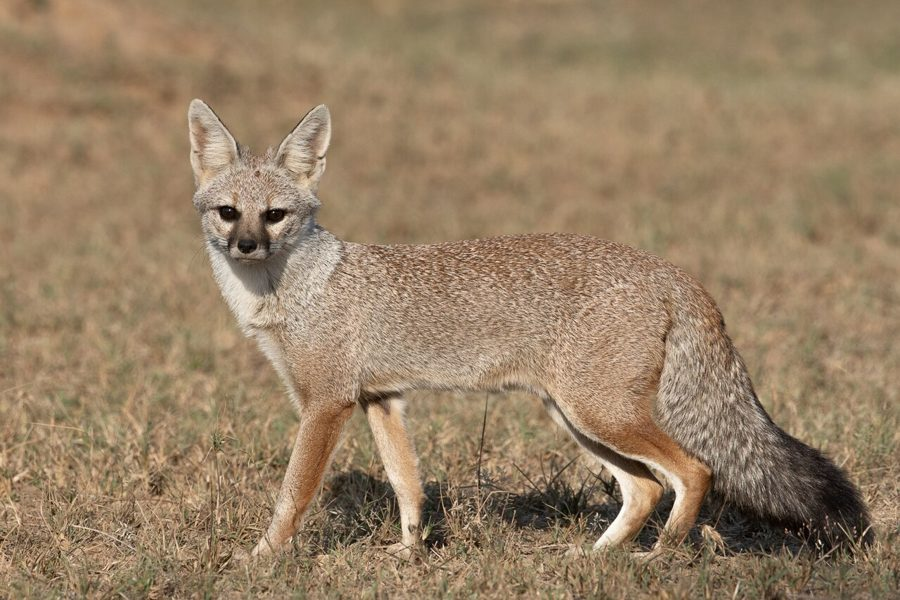

लोमड़ीIndian Fox
Vulpes bengalensis · Canidae · MAM-0016

- Scientific name
- Vulpes bengalensis (Shaw, 1800)
- Family
- Canidae
- Hindi
- लोमड़ी
- Status here
- native
- IUCN
- LC
When to look कब देखें
Present all year.
लोमड़ी / Indian Fox
Vulpes bengalensis (Shaw, 1800) — Canidae
लोमड़ी (खेखड़ी / खिखड़ी / बंगाल फॉक्स) — पूर्वी उत्तर प्रदेश के शुष्क मैदानी इलाकों, खेतों की सीमाओं, बंजर जमीनों और झाड़ीदार क्षेत्रों में पाई जाने वाली एक छोटी, फुर्तीली और शर्मीली वन्यजीव स्तनधारी प्रजाति (small native canid) है। यह गहरे वनों में रहने के बजाय खुले मैदानों और इंसानी बस्तियों के बाहरी किनारों पर रहना पसंद करती है। इसकी सबसे बड़ी पहचान इसका छोटा आकार (बिल्ली से थोड़ा बड़ा), धूसर-रेतीला कोट (sandy-grey coat), और इसकी विशाल झाड़ीदार पूंछ है जिसके अंत में एक विशिष्ट काला सिरा (bushy tail with a prominent black tip) होता है। यह एक सर्वाहारी (omnivore) जीव है जो छोटे चूहों, पक्षियों के अंडों, कीड़ों (जैसे टिड्डों), और जंगली फलों (जैसे बेर) को खाता है। यह मुख्य रूप से निशाचर (largely nocturnal) और संध्याचरी जीव है, जो दिन के समय सूखी, ऊंची जमीनों पर खोदी गई अपनी जटिल गुफाओं (dens) में विश्राम करता है। यद्यपि यह अत्यंत शर्मीली होने के कारण बहुत कम दिखाई देती है, लेकिन इसके पंजों के निशान (tracks), बीट (scat) और बिलों के पास इसकी उपस्थिति जांची जा सकती है। वन्यजीव संरक्षण अधिनियम (WPA), 1972 की अनुसूची II के तहत इसे कानूनी सुरक्षा प्राप्त है। यह आकार में सामान्य सियार (Golden Jackal, MAM-0005) से बहुत छोटी और स्लिम होती है।
Quick Identification त्वरित पहचान
| Feature | Description |
|---|---|
| Size & Build | Small, slender dog-like build, much smaller than a jackal, weighing only 1.8–3.2 kg |
| Coat color | Sandy-grey to silver-grey fur, with a pale cream-white under-belly and throat |
| Tail | Long, very bushy, sandy-grey, ending in a very distinct, solid black tip (never white) |
| Head | Narrow, pointed muzzle, with dark tear-like marks running from the inner eyes down the side of the snout |
| Ears | Large, pointed, erect, grey-brown on the outside and cream-white inside |
Field tip: Look in fallow crop fields at twilight (dusk). Search for a tiny grey dog-like shadow moving silently through the grass. Inspect the tail; if it has a large bushy puff with a black tip and the animal is about the size of a large domestic cat, it is an Indian Fox. Look for complex den openings with multiple escape holes on dry elevated soil.
Morphology आकारिकी
Biometrics (typical measurements of mature adult foxes in the northern Indian plains):
| Measurement | Range |
|---|---|
| Head-body length | 46.0–61.0 cm |
| Tail length | 25.0–35.0 cm |
| Shoulder height | 26.0–28.0 cm |
| Weight | 1.8–3.2 kg |
| Dental formula | I 3/3, C 1/1, P 4/4, M 2/3 = 42 |
Pelage: The fur is short, dense, grey-brown in summer and silver-grey in winter.
Head and Skull: The muzzle is highly pointed; the teeth are adapted for catching rodents and crushing beetle shells.
Limbs: Slender, light brown or reddish-tinted, with sharp claws suitable for digging deep burrows.
Behaviour & Ecology व्यवहार और पारिस्थितिकी
Burrow Habits: Digs complex, multi-mouthed breeding dens (lomri ka bil) on dry elevated soil bunds, containing a central chamber and 2 to 7 escape tunnels with loose soil mounds at the entrances.
Foraging: Hunts alone at night, utilizing its acute hearing to locate insects in the grass or rodents moving in fields.
Communication: Uses high-pitched whines, chattering yips, and short warning barks during the breeding season (December to February), but remains silent for most of the year to avoid larger predators.
Associated Species / Interactions संबंधित प्रजातियाँ
- Predators: Avoids areas with high populations of सियार (Golden Jackal) and stray domestic dogs, which actively chase and kill foxes.
- Dietary relationship: Feeds heavily on agricultural insect pests (crickets and grasshoppers) and small rodents, acting as a natural pest control agent for local farmers.
Conservation Status संरक्षण स्थिति
Protected under Schedule II of the Wildlife Protection Act, 1972. It is listed as Least Concern (LC) by the IUCN, but populations are declining locally in eastern UP due to habitat loss (conversion of dry scrublands to intensive agriculture) and feral dog attacks.
Expected Locally स्थानीय रूप से अपेक्षित
Not a field record. Written from published accounts for eastern Uttar Pradesh. No confirmed local sighting yet — if you have seen it, that is what the atlas needs.
अभी तक स्थानीय पुष्टि नहीं। यह विवरण प्रकाशित स्रोतों से है, किसी अवलोकन से नहीं।
A shy resident mammal found in the agricultural scrub fringes of the Basti district, observed in the Harraiya and Vikramjot blocks. Local farmers report that the "Khikhri" is occasionally spotted crossing empty fields at dusk. Active dens are found in raised sandy borders near riverbeds, but are vulnerable to collapse during heavy monsoon floods.
Distribution वितरण
Global range: Endemic to the Indian subcontinent, found throughout India, Nepal, Pakistan, and Bangladesh.
In India: Distributed widely across all plains, scrub deserts, and dry peninsula zones; absent from dense wet forests and high Himalayas.
In Uttar Pradesh: Distributed throughout all dry agricultural and grassland plains.
In Basti district / eastern UP: Found in rural blocks.
Research Questions शोध प्रश्न
Anyone can investigate these | कोई भी इन प्रश्नों की जाँच कर सकता है
- How many active den sites of the Indian Fox can be mapped in a 5-square-kilometer agricultural area in your block? — Conduct den mapping surveys.
- What percentage of the Fox's winter diet consists of wild fruits (like Ber) compared to rodents in Basti? — Analyze fecal scat samples.
- Does the presence of feral dog packs cause Indian Foxes to abandon their active breeding dens? — Monitor den activity near villages.
- How many escape tunnels can be counted on a single breeding den mound in dry elevated sandy soil? — Document den structure.
- Does the count of field crickets drop in fields surrounding active Indian Fox dens in Basti? / क्या बस्ती में लोमड़ी के सक्रिय बिलों के आस-पास के खेतों में टिड्डों (Crickets) की संख्या कम हो जाती है? — Compare pest counts in crops near dens.
Similar Species मिलती-जुलती प्रजातियाँ
| Species | How to tell apart | comparison |
|---|---|---|
| Golden Jackal (Canis aureus) | Much larger (8–15 kg); dog-like build; tail is shorter, lacks a prominent black tip; sandy-gold coat | सियार — बड़ा आकार, भारी आवाज, पूंछ पर काला सिरा गायब |
| Desert Fox (Vulpes vulpes pusilla) | Tail has a prominent white tip (never black); coat is more reddish-brown; larger ears; found in deserts | मरुस्थलीय लोमड़ी — पूंछ का सिरा सफेद, चमकीला लाल कोट |
| Feral Dog (Canis lupus familiaris) | Variable sizes and colors; snout is wider; tail lacks the dense uniform black-tipped brush; bolder behavior | आवारा कुत्ता — घरेलू बनावट, शर्मीले व्यवहार का अभाव |
Field rule: Small grey-sandy native dog-like animal with a very bushy tail ending in a distinct solid black tip, digging burrows in dry elevated fields, is the Indian Fox (Lomri).
Taxonomy & Classification वर्गीकरण
Original description. George Shaw described this species as Canis bengalensis in 1800 in his General Zoology (Vol. 1, Part 2, p. 330). It was later transferred to the genus Vulpes. The genus name Vulpes is Latin for fox. The specific name bengalensis refers to the Bengal region of South Asia where early specimens were documented.
Subspecies. Monotypic — no subspecies are currently recognised.
Family and order placement. Placed in the order Carnivora, family Canidae (dog family), genus Vulpes.
Phylogenetic notes. Vulpes bengalensis is a distinct branch within the genus Vulpes, representing a specialized lineage adapted to open grasslands and semi-arid plains of the Indian subcontinent, separating from the red fox lineage (Vulpes vulpes) in the Pliocene.
IUCN status rationale. Assessed as Least Concern (LC) by the IUCN Red List (assessed by the IUCN SSC Canid Specialist Group). It has a wide distribution, though local populations face threats from agricultural expansion and disease transmission (rabies/distemper) from domestic dogs.
Photo Gallery फोटो गैलरी
References संदर्भ
- Shaw, G. (1800). General Zoology. G. Kearsley, London, Vol. 1, Part 2, p. 330. [original description as Canis bengalensis]
- Jerdon, T. C. (1874). The Mammals of India. John Wheldon, London.
- Pocock, R. I. (1941). The Fauna of British India, including Ceylon and Burma. Mammalia. Vol. II (Carnivora). Taylor & Francis, London.
- Johnsingh, A. J. T. & Manjrekar, N. (2013). Mammals of South Asia. Vol. 1. Universities Press, Hyderabad.
- World Flora Online / Mammal Species of the World (2024). Vulpes bengalensis details.
- GBIF Occurrence Data — Vulpes bengalensis, India (2010–2025).
Source file: species/fauna/mammals/indian_fox.md